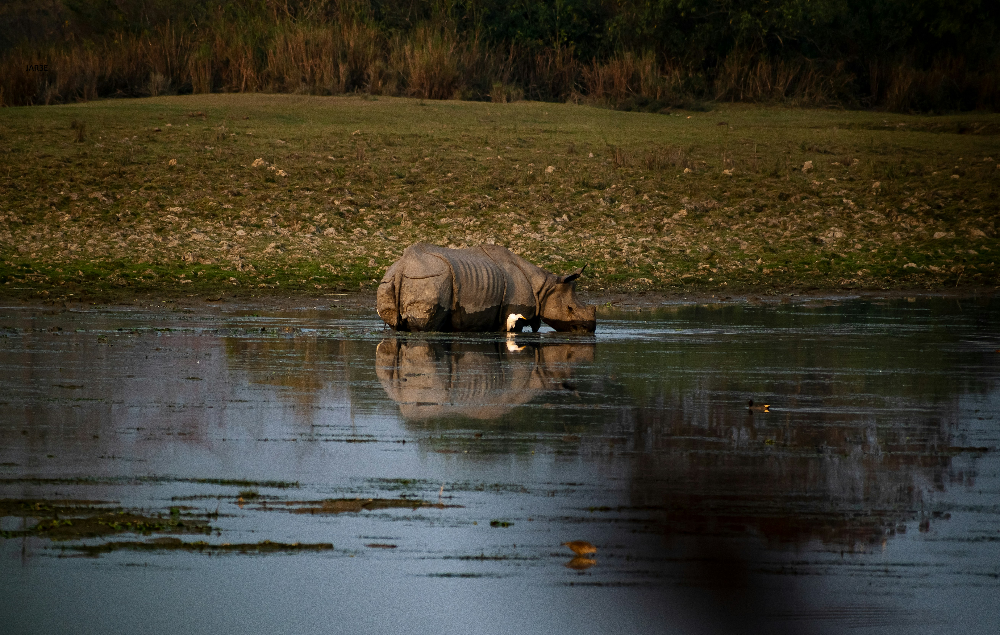

Kaziranga
Embark on a journey through Kaziranga, a UNESCO World Heritage site that serves as the last stronghold of the Great One-Horned Rhinoceros. Spanning the floodplains of the Brahmaputra, this vast landscape of tall elephant grass and marshy lagoons is home to two-thirds of the world's rhino population. As you traverse the park on a jeep or elephant safari, you enter a prehistoric world teeming with Tigers, Wild Water Buffalo, and Asiatic Elephants. This conservation miracle remains one of the finest wildlife refuges on Earth, where the wild heart of India beats strongest.